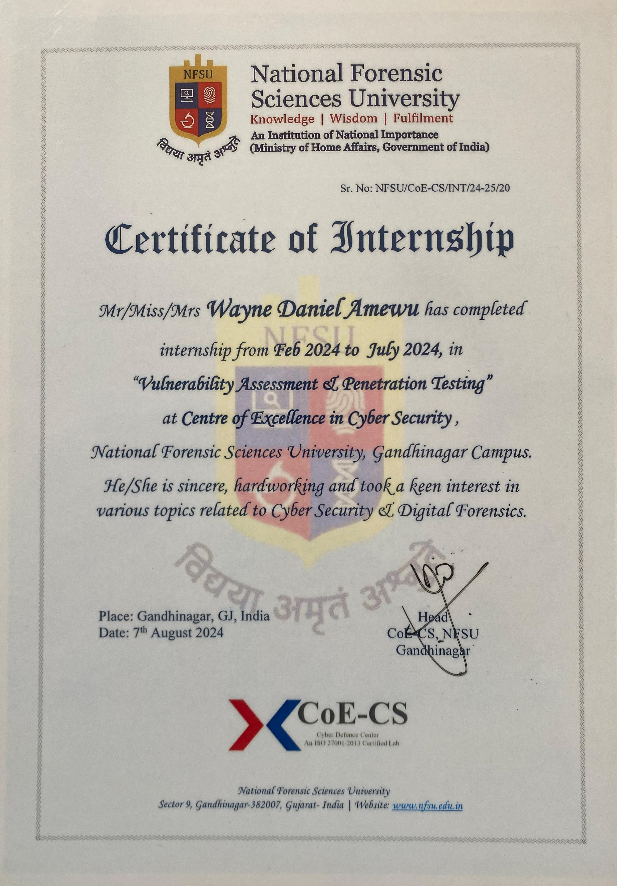

Achivements
and awards
Definition
- Certification in Cyber Security and Digital Forensics
-
This certification demonstrates my expertise in identifying, investigating, and mitigating cybersecurity threats. It covers topics such as ethical hacking, digital evidence handling, incident response, and advanced forensic analysis techniques.
- Certification in Vulnerability Assessment and Penetration Testing (VAPT)
-
This certification highlights my ability to identify, evaluate, and exploit vulnerabilities within IT systems. It focuses on penetration testing methodologies and tools to simulate cyberattacks and develop remediation strategies to strengthen system defenses.
- Certification of Achievement (Professional Diploma in Hardware Networking Engineering)
-
This certification verifies my knowledge of networking technologies and hardware infrastructure. It covers areas such as network setup, troubleshooting, and optimization, making you skilled in managing complex IT networks and ensuring smooth operations.
- Certification in Amazon Web Services (AWS) Machine Learning
-
This AWS certification validates my understanding of machine learning (ML) concepts and their implementation on the AWS platform. You are trained in deploying ML models, utilizing AWS services like SageMaker, and integrating ML into applications for data-driven insights.
- Certification in Amazon Web Services (AWS) Introduction to Cloud
-
This certification signifies your proficiency in cloud computing fundamentals, particularly within AWS. It covers cloud architecture, services, and deployment models, equipping you with essential cloud skills for scalable and secure IT solutions.
gallery


Certifications and Awards

Certification in Cyber Security and Digital Forensics
This certification demonstrates my expertise in identifying, investigating, and mitigating cybersecurity threats. It covers topics such as ethical hacking, digital evidence handling, incident response, and advanced forensic analysis techniques.
Certification in Vulnerability Assessment and Penetration Testing (VAPT)
This certification highlights my ability to identify, evaluate, and exploit vulnerabilities within IT systems. It focuses on penetration testing methodologies and tools to simulate cyberattacks and develop remediation strategies to strengthen system defenses.
Certification of Achievement (Professional Diploma in Hardware Networking Engineering)
This certification verifies my knowledge of networking technologies and hardware infrastructure. It covers areas such as network setup, troubleshooting, and optimization, making you skilled in managing complex IT networks and ensuring smooth operations.
DevTown Certification
Awarded in August 2024, this certification from DevTown recognizes my completion of advanced training in relevant technical fields. It serves as a testament to my continuous learning and development in IT, enhancing my skills in modern technologies and methodologies essential for the evolving tech landscape.
Certification in Amazon Web Services (AWS) Machine Learning
This AWS certification validates my understanding of machine learning (ML) concepts and their implementation on the AWS platform. You are trained in deploying ML models, utilizing AWS services like SageMaker, and integrating ML into applications for data-driven insights.
Certification in Amazon Web Services (AWS) Introduction to Cloud
This certification signifies your proficiency in cloud computing fundamentals, particularly within AWS. It covers cloud architecture, services, and deployment models, equipping you with essential cloud skills for scalable and secure IT solutions..jpeg)
SAP ABAP Certification (TAW 10 & TAW 12)
Awarded by PDM University and SAP, this certification demonstrates my proficiency in SAP ABAP (Advanced Business Application Programming). I successfully completed the courses TAW 10 and TAW 12, gaining hands-on experience in developing and enhancing SAP applications. This certification was obtained through SAP Education’s Site License Program, furthering my expertise in enterprise resource planning (ERP) solutions and programming within the SAP environmentFAO Science and Inovation Strategy Badge
Issued by the FAO eLearning Academy, this badge highlights my successful completion of a program focused on the FAO Science and Innovation Strategy. It demonstrates my understanding of the latest innovations and strategies used by the Food and Agriculture Organization to address global challenges through scientific solutions, further strengthening my interdisciplinary expertise in technology and innovation.Stephane Nappo
“If you think you know-it-all all about cybersecurity, this discipline was probably ill-explained to you.”